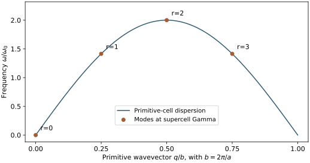
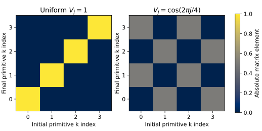

HefeiNAMD Series - Part II
Supercells, NAC, and Surface Hopping
Part I identified a precise restriction: when every nuclear configuration retains the primitive translations, different primitive crystal momenta remain separate. The real-space nonadiabatic molecular dynamics (NAMD) route relaxes that restriction by enlarging the simulation cell. The larger cell admits more spatial patterns of atomic motion and contains the corresponding folded electronic states. Wavefunction changes along this trajectory supply nonadiabatic coupling (NAC), which enters electronic propagation and a surface-hopping description.
The sequence matters. Folding tells us which wavelengths and electronic components fit inside the calculation. Molecular dynamics (MD) supplies their actual motion. Electronic-structure snapshots supply energies and wavefunctions. Their time dependence supplies NAC. Finally, fewest-switches surface hopping (FSSH) converts electronic population flow into stochastic changes of an active-state label. This article follows that chain, then distinguishes a prescribed nuclear path from FSSH with nuclear feedback.
1. Enlarge the cell to admit more wavelengths
Consider a one-dimensional primitive lattice with spacing \(a\) and reciprocal vector \(b=2\pi/a\). An \(M\)-cell supercell has length \(L=Ma\) and reciprocal spacing \(B_s=b/M\). A displacement pattern with primitive wavevector \(q\) is compatible with this supercell when
All these \(q_r\) differ by supercell reciprocal vectors, so they fold to supercell phonon wavevector \(Q=0\), or supercell \(\Gamma\). Relative to the primitive cell, most of them have nonzero wavevector. The three-dimensional condition is the same: the phase must be one under every supercell translation. For a diagonal \(M_1\times M_2\times M_3\) expansion, the compatible primitive q mesh has those subdivisions along the three reciprocal directions.
The electronic folding follows the same geometry. At supercell electronic momentum \(K=0\), a perfectly repeated equilibrium crystal contains the primitive components
Each primitive band supplies \(M\) folded supercell bands. Thus a larger cell can include several primitive electronic momenta in one supercell momentum sector. This is a reorganization of the same states at the undistorted geometry; simply copying a perfect primitive crystal does not create a new coupling. Adding more supercell electronic K points samples additional sectors, but a trajectory that preserves the supercell translations still cannot couple different supercell K sectors.
2. A four-cell example separates folding from coupling
For \(M=4\), the allowed primitive wavevectors are \(0\), \(b/4\), \(b/2\), and \(3b/4\); the last is equivalent to \(-b/4\). All fold to supercell \(\Gamma\). In a monatomic nearest-neighbor harmonic chain with mass \(m\) and spring constant \(C\), define \(\omega_0=\sqrt{C/m}\). Its dispersion and the frequencies represented at supercell \(\Gamma\) are

A real displacement proportional to \(\cos(2\pi l/4)\) has the cell pattern \((1,0,-1,0)\). It is periodic after four cells but not after one. Its two Fourier components have wavevectors \(\pm b/4\). If the electronic potential responds with the same spatial modulation, it can connect folded primitive electronic components separated by those momenta.
To check this spatial statement independently of an electronic-structure calculation, take four normalized plane waves and a dimensionless site potential:
The indices in this expression are taken modulo four. A uniform potential is diagonal in the same basis. The modulated potential has off-diagonal elements even though all four basis states share supercell \(K=0\).

The executable diagnostic constructs the four-site dynamical matrix, verifies its Fourier eigenvalues and the two potential matrices to an absolute tolerance of \(10^{-13}\), and generates these figures. The folded-mode table and error summary are also available. Run python assets/code/hefeinamd_supercell_folding.py with NumPy and Matplotlib from the website root. This is a folding and Fourier check; it does not calculate material NACs or run NAMD.
3. MD supplies the motion inside the supercell
Once the cell is enlarged, its primitive copies must be allowed to have different displacements. The atoms still interact; the change is that the internal copies are no longer constrained to move identically. If every copy is constrained to follow the same displacement, the primitive translations remain intact and Part I's restriction survives. Increasing the number of atoms while retaining that constraint gains no finite-q nuclear motion.
In a prescribed-path calculation, one can equilibrate the chosen supercell at the target temperature and then record a production trajectory \(\mathbf R(t_j)\). The NVT-to-NVE sequence in Part 0 is one practical route: NVT controls the temperature during equilibration, and NVE production evolves at fixed particle number, volume, and total energy. This preparation is distinct from the later electronic dynamics.
Forces evaluated along MD need not be harmonic. The trajectory can include anharmonic motion within the spatial degrees of freedom of the supercell. The cell still excludes incommensurate wavelengths and imposes a longest available wavelength. Finite size, trajectory duration, and thermal sampling therefore remain physical convergence questions. A particular phonon need not be assigned to every frame in order to compute the wavefunction changes.
4. Each configuration defines an instantaneous electronic basis
At each saved geometry, solve the electronic-structure problem and retain a consistent band window. In a Kohn-Sham (KS) description, write
The label \(\alpha\) identifies an instantaneous supercell state. At the perfect reference structure its primitive momentum content can be identified by folding. At a thermally distorted configuration, primitive translation symmetry is generally broken, so a state can contain several primitive momentum components. It is generally incorrect to assign every distorted eigenstate one exact primitive k label.
The real-space route obtains the time dependence directly from these configurations. It does not require a first-order Taylor expansion of the electronic Hamiltonian about the equilibrium structure. Its approximations instead include the chosen electronic-structure model, cell size, nuclear dynamics, retained bands, and subsequent dynamical closure.
5. Consecutive wavefunctions supply NAC
Use the scalar time-derivative convention of Part I:
The scalar \(d\) has units of inverse time; \(\mathbf D\) is the derivative-coupling vector. Where analytic derivatives are unavailable, adjacent-frame wavefunctions provide the overlap matrix
After consistent phase and state matching, an antisymmetrized finite-difference estimate is
The NAC/Hammes-Schiffer–Tully discussion derives the general overlap construction. In a supercell, both wavefunctions belong to the same supercell momentum sector, while their primitive momentum content may change. The vanishing cross-sector overlap in Part I no longer excludes coupling between those folded components.
Arbitrary orbital phases and swaps of nearly degenerate eigenvectors can produce misleading overlap changes. Phase matching, subspace tracking, a sufficient band window, and timestep convergence are essential. A band index alone is not a stable state identity across snapshots. At degeneracies, retain and track the coupled subspace rather than dividing by an energy gap. If tracking rotates a nondegenerate set of eigenstates by a general unitary matrix, transform the energy matrix consistently; it will no longer necessarily be diagonal.
6. Energies and NAC form the electronic propagation matrix
Expand the carrier wavefunction in the moving adiabatic KS basis:
The basis itself changes with time. Inserting this expansion into the electronic Schrödinger equation gives
The diagonal energies accumulate phase; the moving-basis term couples amplitudes. Since \(d_{\alpha\beta}=-d_{\beta\alpha}^{*}\), the effective matrix is Hermitian when its inputs are consistent. The energy difference alone cannot transfer population. Even very close states remain uncoupled if the relevant NAC is zero.
For an overlap-based implementation, the MD snapshot interval, electronic propagation step, and interpolation of energies and NAC are separate numerical choices. Norm conservation and anti-Hermiticity checks detect numerical problems, but neither establishes convergence of a carrier relaxation time.
7. FSSH samples the electronic population flow
Electronic amplitudes and the active state have different roles. The amplitudes describe a coherent superposition. FSSH assigns each trajectory an active-state label and uses stochastic switches to follow population transfer. With \(P_a=|c_a|^2\), the preceding coefficient equation implies
Positive \(J_{a\to b}\) is outward flow from state \(a\). For an active trajectory on \(a\) with \(P_a>0\), the elementary fewest-switches attempt probability over a sufficiently small electronic step \(\delta t\) is
A uniform random number selects a destination from the cumulative probabilities or leaves the active state unchanged. The step must be small enough for a valid total probability; a total above one calls for a smaller step or appropriate substepping. The full FSSH derivation and Tully benchmark give the general background. Here its connection to the supercell calculation is explicit: the wavefunction overlaps determine \(d\), which determines amplitude flow, which supplies the attempted switches.
A nonzero NAC does not guarantee a hop at each instant: electronic coherence and the direction of population flow also enter. Conversely, FSSH cannot generate a physically justified transition from a missing symmetry-forbidden coupling. Folding and nuclear sampling must provide the relevant degrees of freedom before the hopping algorithm is applied.
8. Specify whether the nuclei respond to a hop
In full FSSH with nuclear feedback, the active many-electron adiabatic surface supplies the force. Writing its total potential energy as \(U_A(\mathbf R)\), one propagates nuclear momenta using \(-\nabla_{\mathbf R}U_A\). An accepted switch to \(B\) adjusts the momenta to satisfy
For real derivative couplings, the standard adjustment changes momenta along the derivative-coupling vector; the corresponding velocity change includes the inverse nuclear masses. A scalar time-derivative coupling alone does not determine this multidimensional direction. If insufficient kinetic energy prevents an upward switch, it is frustrated. The total surface energy \(U_A\) must not be identified automatically with a single KS orbital energy \(\epsilon_\alpha\). A feedback calculation needs a consistent excited-state energy and force model.
A common real-space HefeiNAMD strategy instead uses the classical-path approximation (CPA): generate a nuclear trajectory in advance and reuse it for the selected carrier's electronic dynamics. In this route, active-state switches do not recompute the saved nuclear path or apply the full feedback loop above. This is the prescribed-path workflow described in the real-space methodology of Zheng et al., Eqs. (1)–(4).
The population-flow formula explains the basic FSSH idea; a particular program can additionally use thermal acceptance factors or decoherence corrections. Those choices must be stated with the actual version and protocol. They are separate from supercell folding and the overlap-based NAC construction. An ensemble of active-state occupations is also a distinct estimator from the ensemble average of \(|c_\alpha|^2\).
9. The practical real-space calculation chain
- Select the supercell. Relate its compatible primitive q and folded k components to the transitions of interest. Distinguish cell-size convergence from electronic integration-mesh convergence.
- Sample nuclear motion. Relax and equilibrate the supercell, allow the internal cells to move independently, and save the production trajectory with a documented ensemble and temperature.
- Prepare electronic snapshots. Use consistent electronic settings and retain the states needed to cover the initial excitation and accessible final energies.
- Construct energies and NAC. Match states and phases between adjacent frames; check the snapshot interval and the retained subspace.
- Propagate amplitudes and switches. Specify the initial electronic state, propagation step, hopping rule, decoherence treatment, nuclear feedback or CPA, and statistical sampling.
- Define the observable. Report whether a population means coherent electronic weight or active-state occupation. Momentum-resolved results require projection or unfolding onto primitive momentum sectors; supercell band labels alone do not supply them.
The resulting picture connects the steps without attributing extra physics to folding: the larger cell admits the motion, the trajectory changes the instantaneous states, NAC measures their rotation, and FSSH supplies a stochastic active-state description. Finite size, classical nuclei, electronic-structure errors, state truncation, and the chosen feedback/decoherence approximation still bound the calculation.
Sources and further reading
- Official HefeiNAMD code and teaching page; source repository.
- Z. Zheng et al., Introduction and real-space methodology: the finite-supercell momentum restriction and instantaneous-KS, prescribed-path formulation.
- J. C. Tully, Molecular dynamics with electronic transitions, J. Chem. Phys. 93, 1061–1071 (1990); article copy hosted by the University of Illinois.
- S. Hammes-Schiffer and J. C. Tully, Proton transfer in solution: Molecular dynamics with quantum transitions, J. Chem. Phys. 101, 4657–4667 (1994); article copy hosted by the University of Illinois.